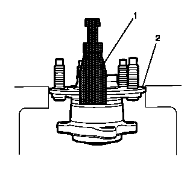
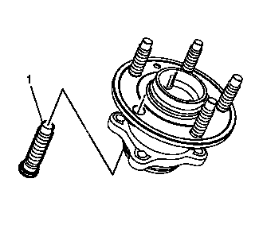
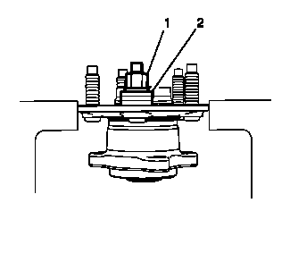

车轮双头螺栓的更换
拆卸程序
- 1.举升并顶起车辆。举升和顶起车辆
- 2.车轮轴承和轮毂总成»拆下 –后轮轴承和轮毂的更换
-

3.将车轮轴承及轮毂总成（2）安装至合适的台钳中。
- 4.使用CH 43631分离器（1），将车轮双头螺栓从车轮轴承和轮毂总成上拆下并报废。
安装程序
-

1.将新的车轮双头螺栓（1）定位至车轮轴承和轮毂总成。
-

2.使用三个垫圈（2）和旧的车轮螺母（1），紧固车轮螺母（1）直至车轮双头螺栓就位于车轮轴承和轮毂法兰上。
- 3.将车轮轴承和轮毂总成从台钳上拆下。
- 4.后轮轴承和轮毂总成»安装 –后轮轴承和轮毂的更换
- 5.拆下支架并降下车辆。